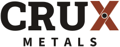
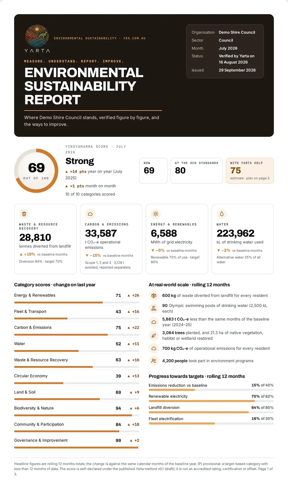

Crux Metals/Reporting
Reporting
Every bale, every docket, every container.
Measured, not modelled. Every vehicle is weighed in and out at our weighbridge, and each stream is weighed again before it leaves. Your docket shows exactly what left your site.
The docket
Weighed, not guessed.
Guide weights help you plan. The weighbridge settles it: the truck is weighed full and empty, and the difference is the weight of your metal.
- Gross
- The truck with your load on board.
- Tare
- The same truck, empty.
- Net
- Gross minus tare: the weight of your metal.

Weighbridge docket- Docket
- No. 000000
- Date
- DD / MM / YYYY
- Customer
- Your organisation
- Site
- Your site, VIC
- Material
- Mixed steel
- Gross
- 16,240 kg
- Tare
- 10,980 kg
- Net
- 5,260 kg
Environmental reporting through YARTA
Environmental reporting
Reporting through YARTA.
Environmental reporting through YARTA Environmental Sustainability, a Recycle Group initiative. The recycling line on your report rests on the weighbridge and processing records at North Geelong, not a contractor's summary.
- A weighbridge docket for every load
- Your collections recorded in one place
- Useful for your own environmental reporting, waste records and audits
Ask Nigel what reporting suits your organisation when you book a collection.

SampleBacked by Recycle Group
Registered, certified, checked every shift.
Crux Metals is a Recycle Group business. The North Geelong site is EPA Victoria registered, and the group runs certified management systems and eCheck, its own daily safety system.
IT and data
Drives out before we come.
We collect server racks, computers and cabinets as scrap metal. We don't take data-bearing drives, so remove or wipe drives and SSDs before collection.
- Before we come
- Drives and SSDs removed or wiped.
- Batteries
- Out of equipment and kept apart. They travel separately, and we take them too.
- On the docket
- The weight of every load we take away.
We collect it. We recycle it.